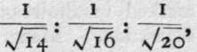
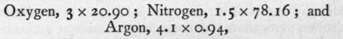
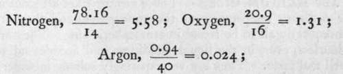

The Atmosphere
Description
This section is from the book "Modern Chemistry", by William Ramsay. Also available from Amazon: Modern Chemistry: Theoretical and Modern Chemistry (Volume 2).
The Atmosphere
In the case of mixtures of gases, the problem becomes an easier one. For in this case, each gas retains its individual properties. The atmosphere, for example, is believed to be a mixture of the gases if small amounts of water-vapour, of carbon dioxide, and of ammonia, all of which vary considerably in amount, be subtracted.
This can be shown by several lines of argument.
First, The density of air agrees with the mean of the densities of its constituents, taken in the proportion in which they occur. Thus, the density of the mixture of atmospheric nitrogen and argon differs by only i part in 40,000 from that calculated from their relative weights, and the proportion in which they occur. This is the case with compound gases only when the constituents are present in equal proportions by volume, as in hydrogen chloride, HC1. The above mixture is far from fulfilling that requirement.
Second, The constituents of air can be separated by diffusion. Thomas Graham discovered that the rate of escape of gases through an opening, or of passage through
Nitrogen, | 78.16 per cent. |
. 20.90 „ | |
Argon, etc, . | 0.94 „ |
100.00 |
a porous partition is inversely in the order of the square roots of their relative densities. Now, air has been enriched in oxygen and in argon by diffusion; the lighter nitrogen passes more rapidly in the proportion of  the last two fractions referring to the rates of oxygen and argon respectively; the oxygen and argon, being more slowly diffusible, are left to the last.
Third, The constituents of air may be separated by solution in water. While oxygen is soluble at atmospheric temperature in the proportion of about 3 volumes in 100 of water, nitrogen is much less soluble-about 1.5 volumes ; and argon about 4.1 volumes. Hence, on shaking air with water, the relative volumes dissolved are :
or in the proportion of 63 : 117 : 3.8. It is evident that the relative proportion of nitrogen has considerably decreased.
Fourth, The elements contained in air are not present in any atomic ratio. To ascertain the relative number of atoms of these elements it is necessary to divide the percentage amount of each by its atomic weight; thus we have
 and these numbers bear to each other no simple ratio.
Lastly, it is possible by distilling liquid air to separate the more volatile nitrogen from the less volatile oxygen and argon.
For these reasons, and other similar ones, it is concluded that air is a mixture.
The Analysis of the Atmosphere is, however, always performed by chemical means, for the difference in physical properties of its constituents is not sufficiently marked to allow of their being utilised for purposes of separation. Many common elements unite easily with oxygen to form non-volatile compounds, when they are heated in air. One of the most convenient for this purpose is metallic copper. By passing a known volume of air over copper turnings, contained in a counterpoised tube of hard glass, and heated to redness, the oxygen of the air is removed, for it combines with the copper to form non-volatile black oxide of copper. The increase in weight of this tube gives the weight of the oxygen in the measured volume of air. But it is customary to analyse air volumetrically by absorbing the oxygen from a known volume by means of burning phosphorus, or of a solution of potassium pyrogallate : the remainder consists of a mixture of nitrogen, argon and its congeners. The separation of these gases from each other is described in the next paragraph.
Reference has already been made in Part I. to the different processes which may be used for the isolation of elements from their compounds. But there exists a group of elements, that of which the first member is helium, which form no compounds, and which therefore are found only in a free state. It is, therefore, convenient to begin with these.
Continue to:
- prev: Chapter I. Methods Of Preparing Elements-Their Physical Properties
- Table of Contents
- next: The Helium Group